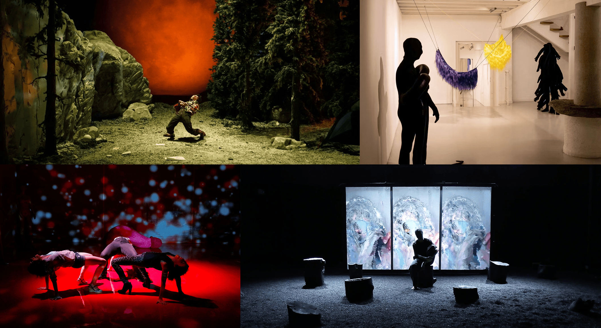
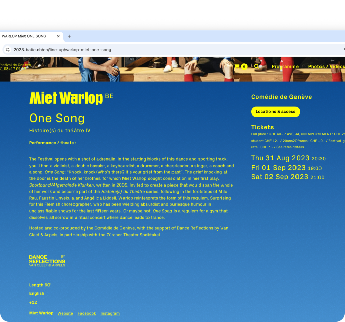
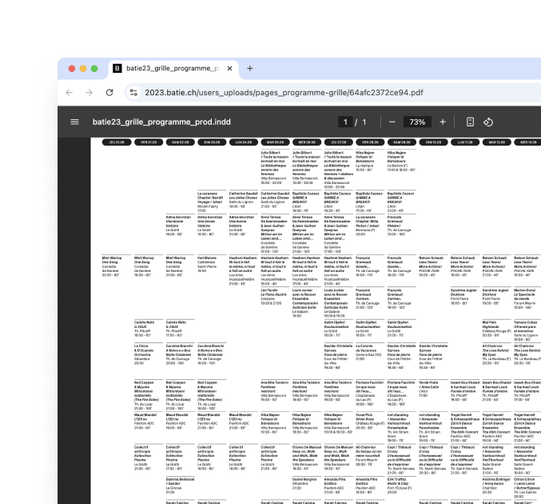
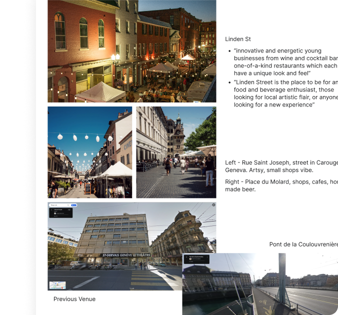
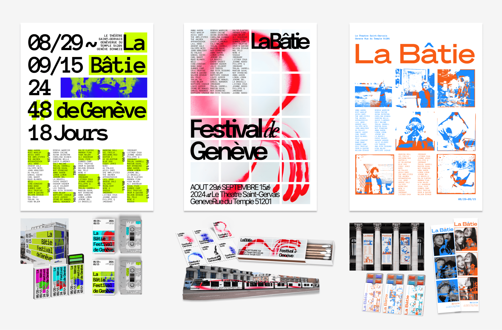
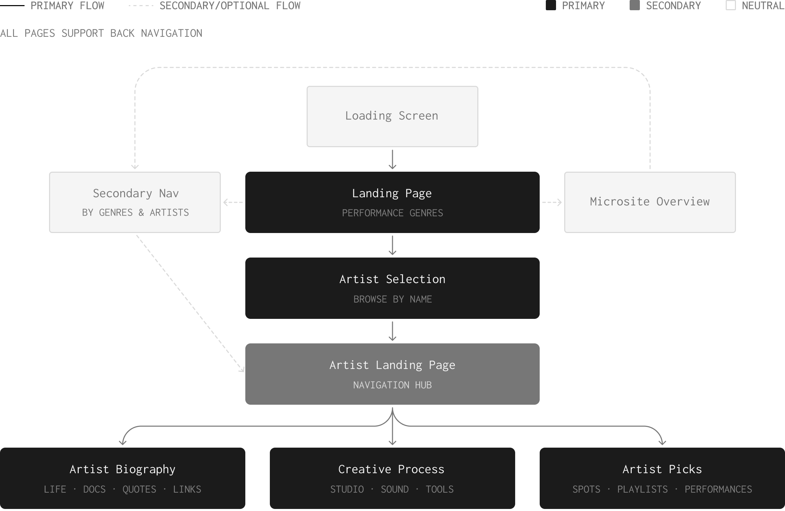
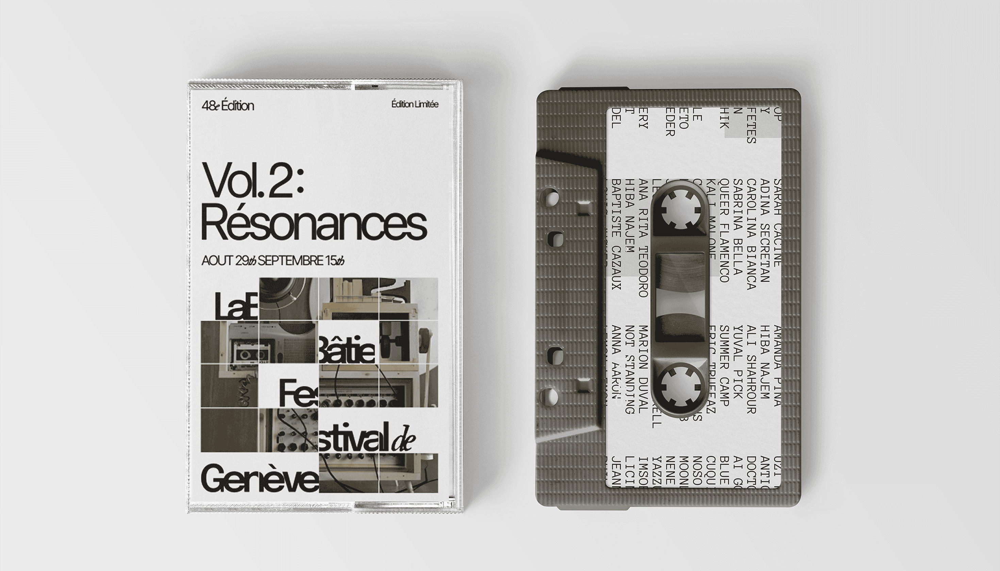
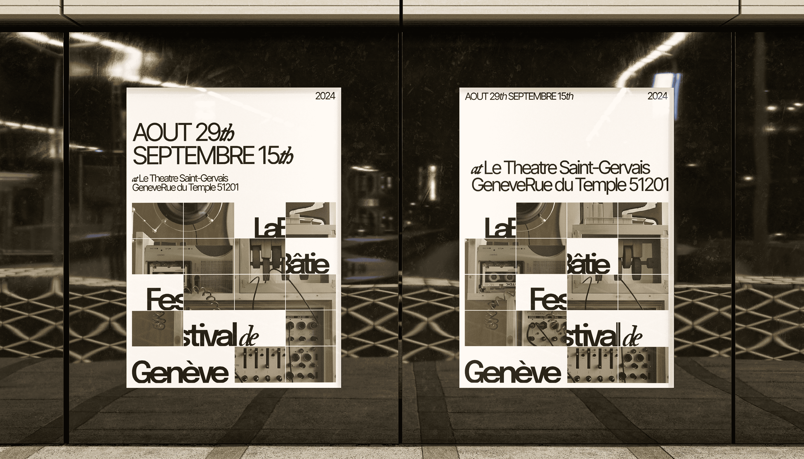

Extending La Bâtie Beyond the Stage
A brand identity system and post-festival microsite for La Bâtie Festival 2024, crafted to sustain audience engagement across print and digital touchpoints.
Explore the final interactive prototype, and client presentation.
BACKGROUND
An 18-day festival connecting artists and audiences across Geneva
La Bâtie Festival de Genève is an annual multidisciplinary arts festival featuring emerging and renowned international and local artists, dedicated to innovation and community engagement across multiple venues.

RESEARCH
Understanding the festival in cultural context
To design an identity beyond aesthetics, I initiated a deeper contextual research to ground the work in Geneva’s cultural landscape.
FOCUS AREAS
KEY INSIGHTS

Ticketing and program previews

Full 18-day multi-venue schedule

Local scenes and venue surroundings
La Bâtie’s website prioritizes ticket sales and previews, leaving limited room for deeper artist discovery or post-event connection. Dense, overlapping programming across 18 days makes the breadth of offerings difficult to revisit, revealing a gap between the festival’s cultural scope and its digital presence.
OPPORTUNITY
How might we deepen La Bâtie's cultural impact beyond the festival?
La Bâtie seeks to amplify artistic voices and foster dialogue, yet its digital presence limits that reach.
INITIAL EXPLORATION
Developing the visual language
Informed by research, we explored three art directions for how the identity could reflect the festival's energy and cultural breadth.

PIVOT
Visuals alone weren't enough
Moving into microsite design, we hit a wall. Without a content framework, the experience felt directionless.
Stepping back, I returned to research and proposed a content strategy grounded in the festival’s values, shaping the architecture around three pillars: artist biography, creative process, and picks.

VISUAL SYSTEM
Unifying the visual language
Drawing from all three directions, we built a cohesive visual language that foregrounds artistic voice and supports deeper engagement.
View Rationale
A combination of serif, sans-serif, and monospace type establishes hierarchy.
A monochromatic palette provides a neutral base, letting coloured media guide focus and emotional contrast.
A modular grid with overlaid text blocks for a structured yet flexible layout that reveals content progressively.
Musical instrument interiors invite audiences into the deeper, unseen sides of each artist.
Cassettes act as tactile souvenirs, referencing music culture and nostalgia. Postage stamps serve as collectible fragments, preserving the festival experience as physical memory.



MICROSITE
Uncovering the deeper stories of La Bâtie 2024
The final microsite offers an intimate glimpse into each artist's life, extending their presence beyond the stage and creating lasting connection with audiences.
Explore the final interactive prototype, and client presentation.
A sliding-tile logo animation introduces the grid system, opening into a performance montage and interactive genre grid guides toward artists through a persistent index.
Documentary clips, a quote, and curated links reveal the artist behind the work: their story, voice, and connections.
An interactive studio reveals each artist’s creative process through sounds, movements, and tools that shape their work.
Favourite local spots, curated playlists, and past performances offer a window into how each artist lives, listens, and moves.
REFLECTION
Crafting a meaningful experience ✨
What surprised me most was how difficult it was to translate the graphic system into a digital experience, and how critical a content strategy is for making deliberate, aligned design decisions.
Leading both visual curation and content strategy for the first time helped me gain confidence in making design decisions and thinking holistically. This project reinforced that meaningful experiences emerge when context, purpose, and intention are considered as carefully as the design itself.